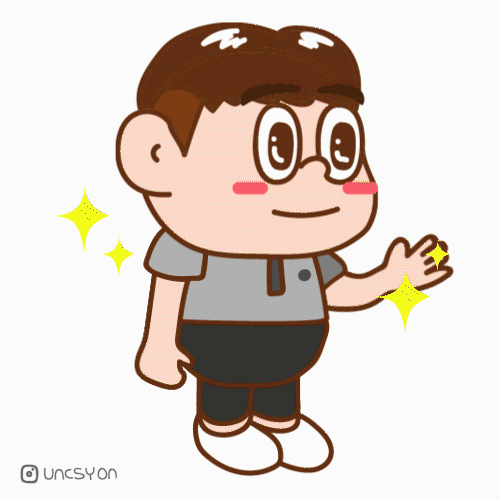
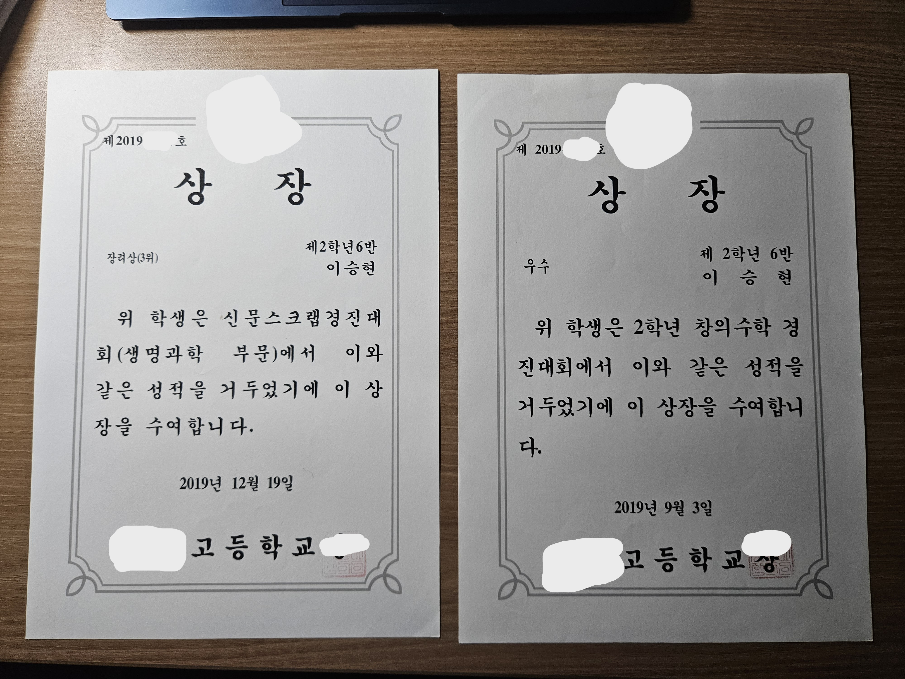
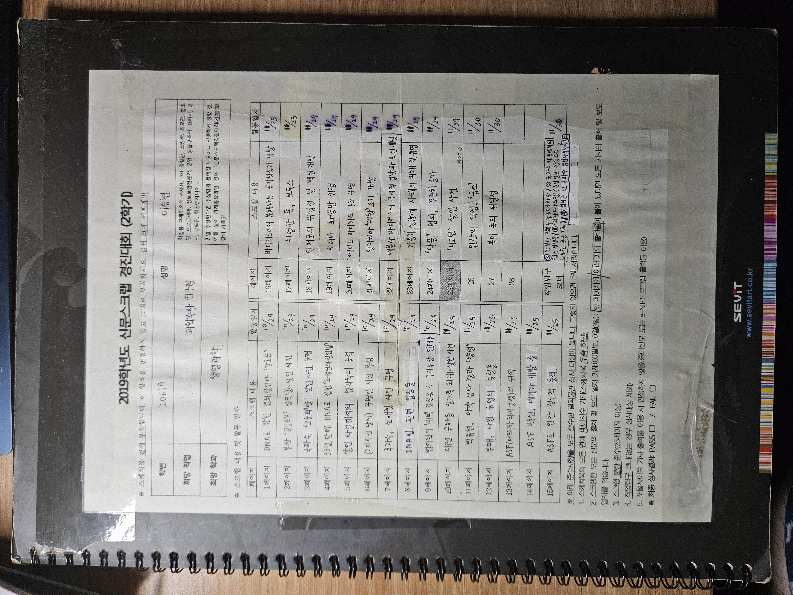
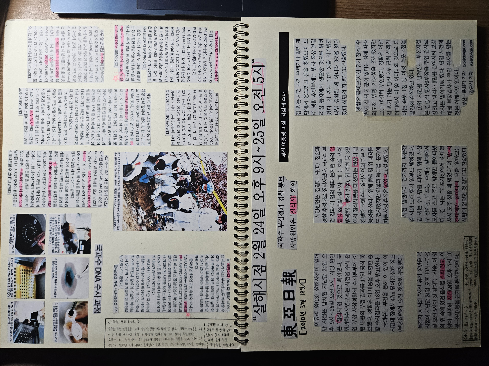
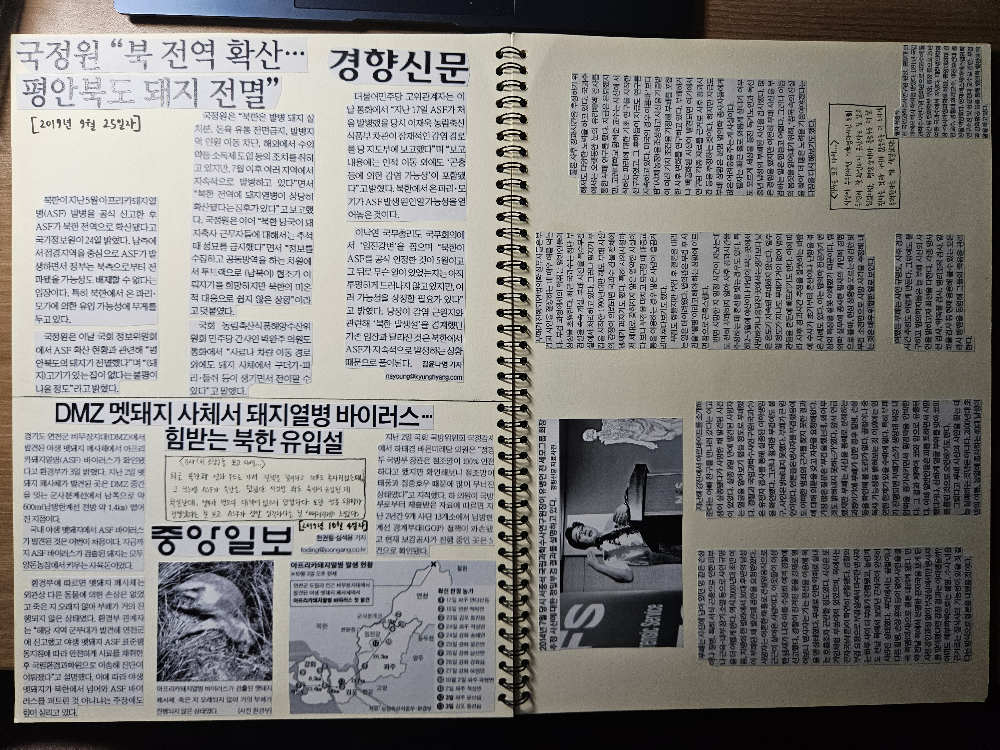
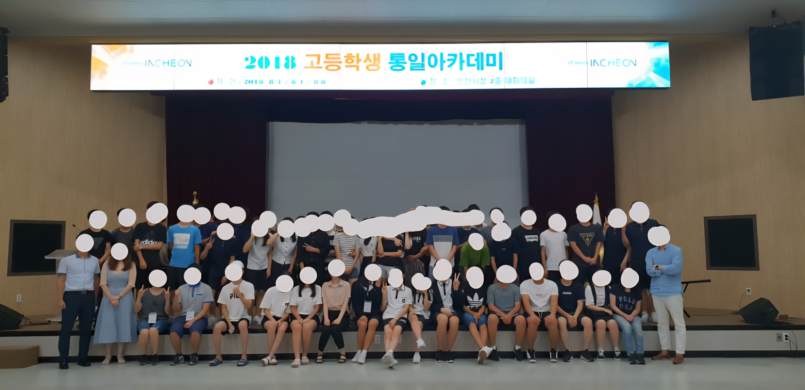
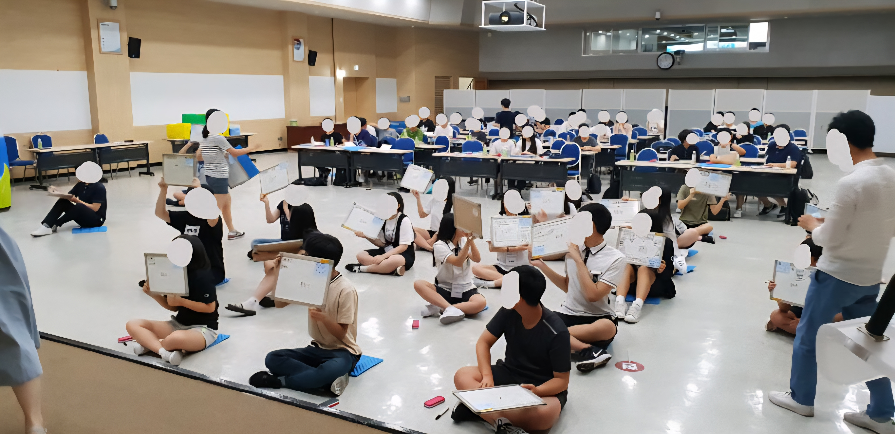
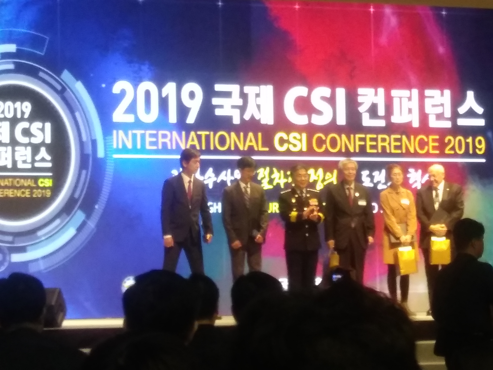
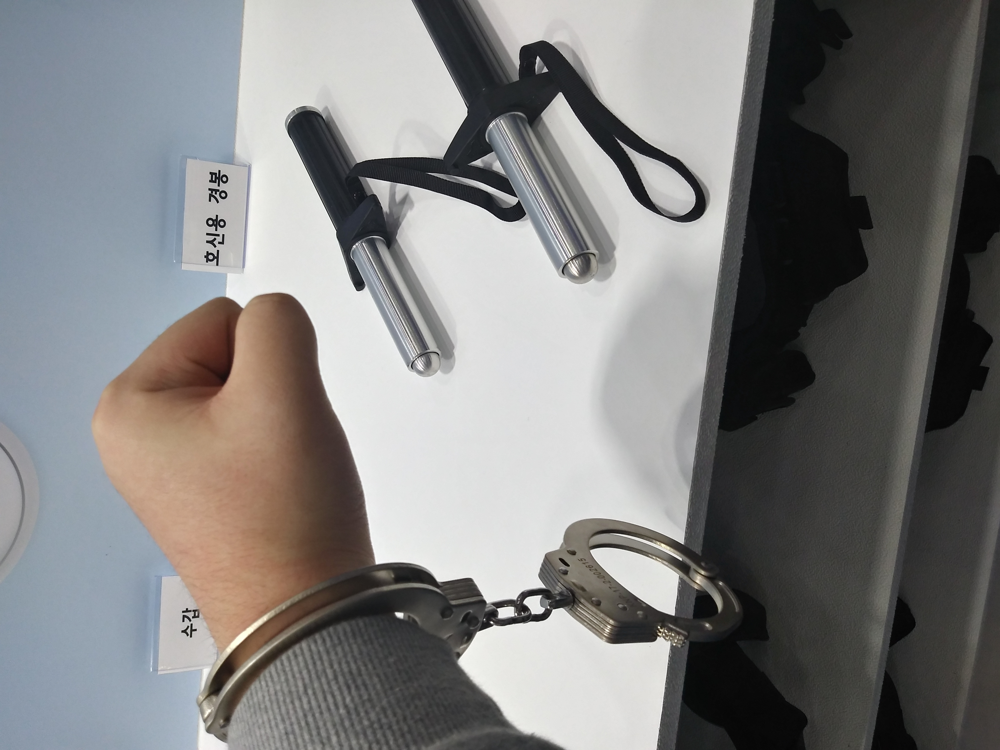
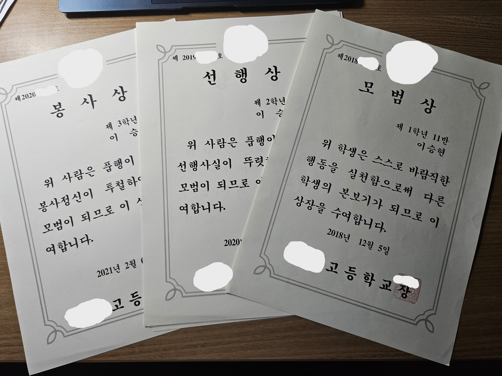

청소년기 2

제1회 청소년 드림 엑스포의 한 부스 운영자 분이 그려주신 내 움짤
주요 연표
- 2018년: 이사 후 서구 소재 XX고 입학
-
2019년: 교내외 행사 및 대회 상당수 참가
-
2020년: 코로나19 때문에 온라인 수업함.
이사
16년간 살던 고향을 떠나
인천에 왔다.
처음엔 새로운 곳이라 들떴는데, 2025년 현재...
너무 그립다.
대회 삼매경

교내 대회에서 받은 상장들.
고1~2 땐 꽤 상당한 대회들에 참가했었다.
무작정 수상하는 상상과 내가 뭔가를 한다는
자부심 때문이었을까.
수학 경시대회
외부 경시대회마냥 어려운 게 아니라며 담임선생님께서 권하시길래,
참가해서
우수상을 받았다.
참고로 내 담임선생님은 수학 담당이셨다.
신문 스크랩 대회



한 번은 이거 만드느라 학교서 밤 9시까지 있다가, 2학년부장 선생님께서
엄마 전화 받고 부르셨었다.
이 대회는 특정 분야의 신문 기사들을 스케치북에 모아 스크랩하는
대회였다.
당시 내 꿈은 과학수사관이었고 마침
화성 연쇄 살인사건의 진범이
DNA 감정으로 특정됐던지라 생명과학 분야로 참가했었다.
나름
매일 준비하다가 임박해서 냈음에도, 장려상을
받아서 좋았다.
행사 삼매경


2018년 인천시 주최 고등학생 통일 아카데미


2019년 경찰청 주최 국제 CSI 컨퍼런스에서 당시 경찰청장이 개회사를 하고
있다. 치안 박람회에도 가서 수갑을 체험했다.
2018년까진 외교안보 관련 진로를 희망했고
19년도엔 과학수사 관련 진로를 희망했기에,
각 행사에 주저 없이 참석했었다.
통일 아카데미 골든 벨에서 내가 아시안 하이웨이를 영어로 적어서 진행자가
감탄했었다.(근데 결국 탈락함...)
- 아시안 하이웨이(Asian Highway)
-
아시아 32개국을 횡단하는 140,000km에 이르는 간선도로. UN 산하
ESCAP의 1992년 ALTID 계획 이래로 추진 중인 현대판 실크 로드지만,
외교 및 안보 여건으로 매우 어려워 보인다. 특히 최근엔 북중러의
위협으로 더 희미해졌다.(출처:
한국어 위키백과-아시안 하이웨이,
ESCAP 홈페이지)
모범생(?)

학교서 받은 도덕 관련(?) 상장들.
선생님께 나름 예를 갖춘 것과 수업 끝나고
모르는 거 질문한 거 밖에 없는데...
아무리 반별이라도 2개년이나 모범상을 받은 게 놀랍다.(상 주신 선생님들께 지금도 감사할 따름.)
집콕
코로나 때문에 1학기 동안
집에만 있었고, 자연스레 인터넷을 많이
보면서 몰랐던 상식들을 알기도 했다.